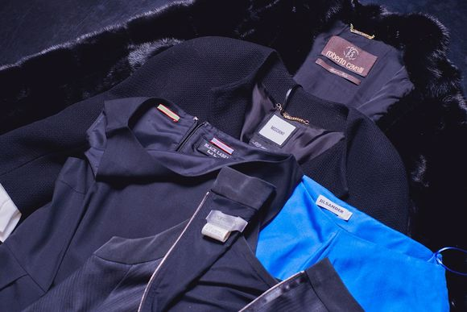

Услуги ателье
Пошив одежды

В нашем ателье по пошивы одежды Вы можете заказать индивидуальный пошив одежды, пошив вечернего платья и корпоративной одежды, пошив одежды больших размеров и одежды для беременных, пошив мужской, женской и детской одежды, пошив верхней одежды (куртки, пальто, плащи, дубленки, шубы),пошив штор и чехлов для мебели, пледов, а также мы принимаем заказы на пошив одежды для животных.
 Мы создадим для Вас индивидуальный, роскошный наряд, воплотив в нем все Ваши пожелания.
Мы создадим для Вас индивидуальный, роскошный наряд, воплотив в нем все Ваши пожелания.
Наверное, каждый сталкивался с проблемой – что делать с любимыми вещами, которые по тем или иным причинам пришли в негодность: повредили любимую кофточку, прожгли дырку на любимых джинсах, или «прожорливая» моль испортила Вашу шубу. Не нужно спешить избавляться от таких вещей. Принесите их в наше ателье по ремонту одежды и наши мастера вдохнут новую жизнь в столь полюбившиеся Вам вещи.
Мастера Ателье ЛЁН готовы предложить Вам срочный ремонт одежды, ремонт трикотажных изделий, ремонт, а также полный перекрой, с изменением фасона и добавлением новых дизайнерских решений шуб, дубленок и другой верхней одежды, и одежды из кожи, ремонт костюмов, художественную штопку, подгонку по фигуре свадебных, выпускных и вечерних платьев, используя самые современные методы, материалы и оборудование.
Декоративная вышивка
Самый эффектный, надежный и доступный способ выразить неповторимость и неординарность своего стиля в одежде – индивидуальная вышивка. Такой способ декорирования помогает также подчеркнуть уникальность домашнего интерьера, обстановки в офисе или ресторане. Креативная вышивка может использоваться даже в непривычных местах, например, ею украшаются салоны автомобилей. Главным отличием индивидуальной вышивки от машинной является то, что она создается в единичном экземпляре. Изготовление такого изображения – трудоемкий процесс, требующий особого терпения и аккуратности. Однако результат такой работы превосходит все ожидания: вещь, украшенная подобным образом, приобретает особую художественность, уникальность и ценность.